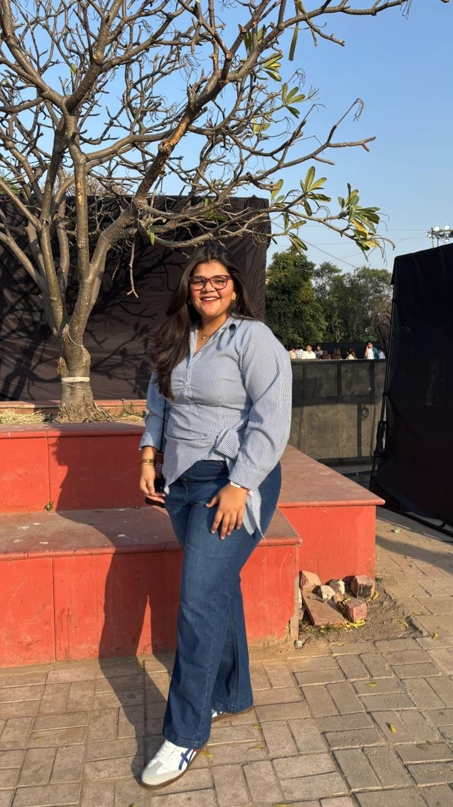

BUSINESS STUDENT · CREATIVE THINKER · CURIOUS MIND
Economics, finance & marketing — exploring where ideas meet opportunity.
I am currently pursuing a Bachelor of Business Administration in Digital Business and Entrepreneurship (BBA DBE) at IIM Bangalore, alongside my BMS at Jagran Lakecity University.
I enjoy exploring business ideas through research, analytical thinking and communication. Outside academics, I find inspiration in art, baking and the little details of everyday life.
